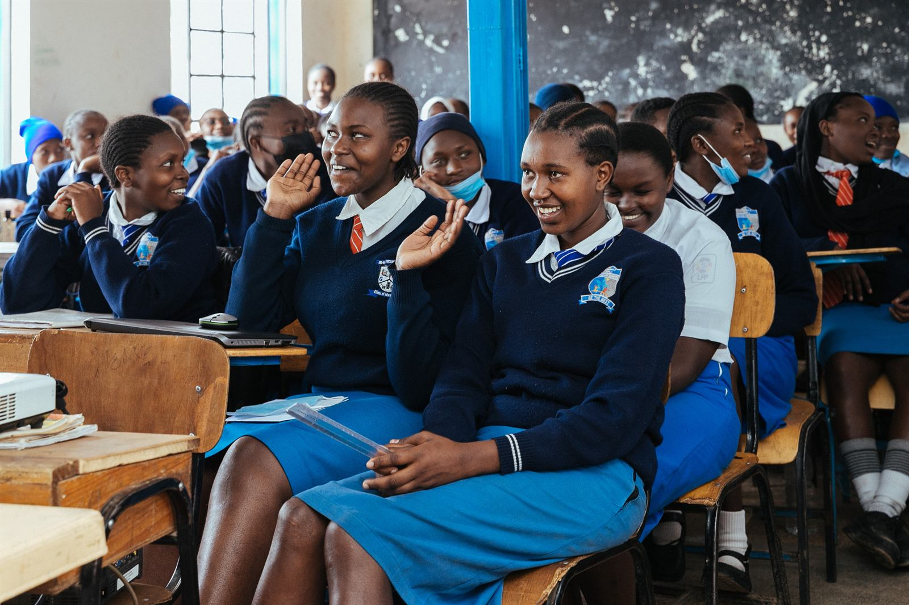

PP1–PP2
Pre-primary
Our youngest learners build early reading, number and language skills through play, songs and routine. For many children this is their first safe, structured place to learn.

We teach Kenya's Competency-Based Curriculum (CBC) from PP1 to Grade 12, so a child can grow up with us from their first day of school to their last.

PP1–PP2
Our youngest learners build early reading, number and language skills through play, songs and routine. For many children this is their first safe, structured place to learn.
Grade 1–6
Pupils build strong foundations in literacy, numeracy, science, creative arts and Kiswahili, with a daily meal that helps them stay focused through the school day.

Grade 7–9
Students take a wider range of subjects and start discovering their strengths as they prepare for the move to senior school.

Grade 10–12
Under CBC Senior School, students follow a chosen pathway that prepares them for university, college or work. Mentorship helps them plan what comes next.

These programmes help our children stay in school, stay healthy and grow in confidence.


1,600 meals a day, so no child has to learn on an empty stomach.
Mentoring and support that help girls stay in school, keep learning and plan their future.
Guidance on school, life and what comes after the final exam, from people who believe in them.
A place to explore interests beyond the timetable, learn new skills and make friends.
Team games that build fitness, discipline and confidence.
Singing, performing and storytelling that help children find their voice.

Looking for a place for your child in Laini Saba or nearby? Call or WhatsApp us to ask about places and to arrange a visit.